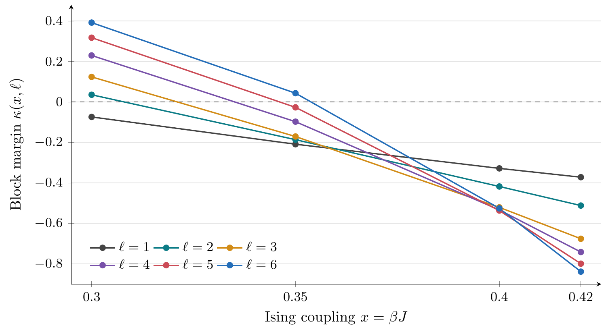

x = 0.35 · 6 × 6 BLOCK
κ > 0.0432
Certified positive block margin.
Two finite-block certificates beyond the single-site Dobrushin condition, with exhaustive boundary searches and explicit roundoff bounds.
For the ferromagnetic Ising model at zero longitudinal field, let x = βJ. Every translate of an ℓ × ℓ square is updated with rate ℓ−2. The exhaustive calculation gives:
Certified positive block margin.
Certified positive block margin.
The single-site margin 1 − 2 tanh(2x) is negative at both couplings. These block certificates supply the classical reference for the quantum perturbation result in Rapid mixing of Gibbs samplers via quantum Dobrushin–Shlosman conditions.

The package includes C++17 transfer-matrix code, Python verification, certified input weights, coefficient tables, maximizing boundary configurations, and conservative perturbation-window calculations.
Independent direct enumeration at sides 1, 2 and 3, plus zero- and small-coupling checks.
Transfer recurrences, arithmetic assumptions, CSV conventions, and commands for all supplied searches.
Outward-rounded influence and margin bounds, boundary maximizers, and additional sides 7 and 8.
The finite-block proof, roundoff analysis, and explicit conservative shell estimates.
Full searches grow rapidly with block size. The reference tables use IEEE binary64 arithmetic in round-to-nearest mode without reassociation or fused contraction. The README documents the numerical certificate and its assumptions.
Versioned release · Machine-readable citation
Cambyse Rouzé
Inria, Télécom Paris, LTCI, Institut Polytechnique de Paris, Palaiseau, France.
Daniel Stilck França
Department of Mathematical Sciences, University of Copenhagen, Denmark.